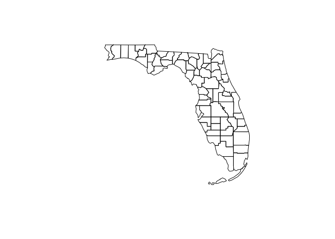
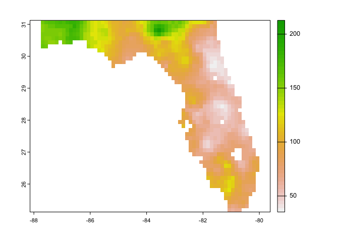
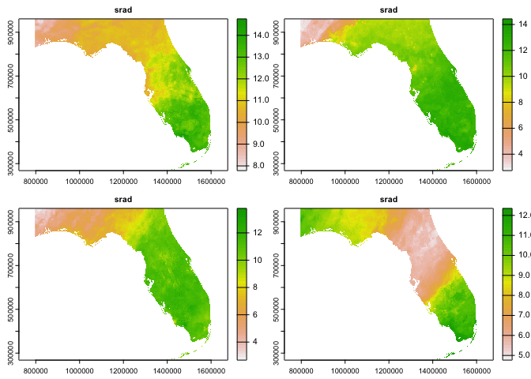
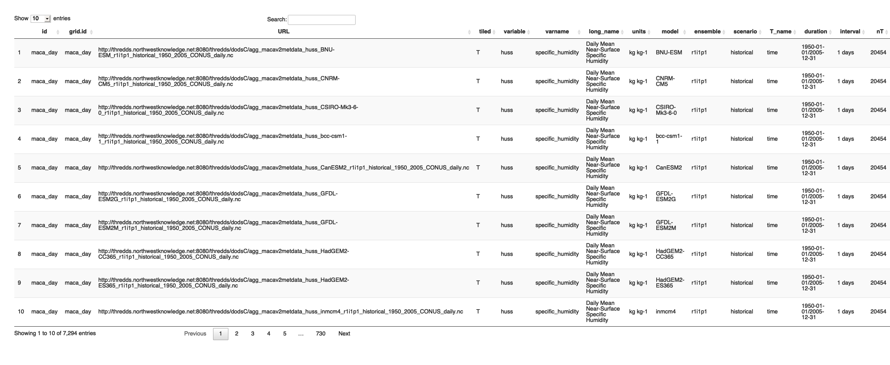
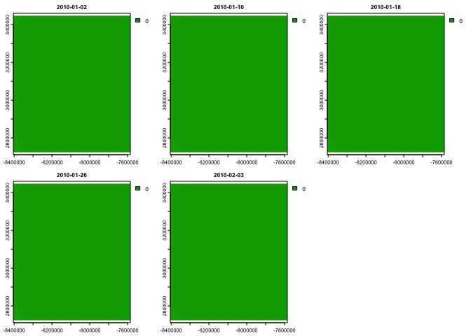
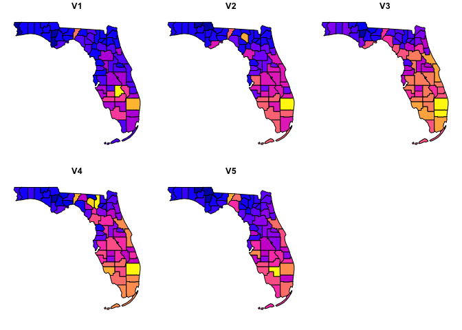

TL:DR;
opendapR provides a generalized inter functions needed to find, and document, the information needed to identify and form OpenDap queries for a range of resources.
Terminolgy
OPeNDAP is a framework that simplifies scientific data networking via software that makes local data accessible to remote locations. see here
For example a large NetCDF file of gridmet data can sit on the Northwestern computing system and users - like us - can request subsets of data from that file!
Large local files can be published to a web-based THREDDS Data Server from which metadata and data can be accessed using OPeNDAP, OGC WCS, HTTP, and other data access protocols.
This allows users to stream the portion of the data set releavnat to them!
Use Cases
Lets get data in some different ways for the state of Florida.
library(opendap.catalog)
library(terra)
#> Warning: package 'terra' was built under R version 4.1.2
#> terra 1.5.17
AOI <- AOI::aoi_get(state = "FL", county = "all")
plot(AOI$geometry)
Remote Resource
url <- "https://cida.usgs.gov/thredds/dodsC/bcsd_obs"
dap = dap_crop(URL = url, AOI = AOI, startDate = "1995-01-01")
dap.summary(dap)
#> vars: > pr [mm/m]
#> > prate [mm/d]
#> > tas [C]
#> > tasmax [C]
#> > tasmin [C]
#> > wind [m/s]
#> X: 62 (longitude)
#> Y: 48 (latitude)
#> T: 1 (time - 1 months)
#> values: 2,976 (vars*X*Y*T)
knitr::kable(dap, format="html")| id | varname | X_name | Y_name | T_name | units | long_name | URL | duration | interval | nT | proj | X1 | Xn | Y1 | Yn | resX | resY | ncols | nrows | toptobottom | Tdim | startDate | endDate |
|---|---|---|---|---|---|---|---|---|---|---|---|---|---|---|---|---|---|---|---|---|---|---|---|
| local | pr | longitude | latitude | time | mm/m | monthly_sum_pr | https://cida.usgs.gov/thredds/dodsC/bcsd_obs?pr%5B540:1:540][0:1:47][296:1:357] | 1950-01-31/1999-12-31 | 1 months | 600 | +proj=longlat +a=6378137 +f=0.00335281066474748 +pm=0 +no_defs | -87.6875 | -80.0625 | 25.1875 | 31.0625 | 0.125 | 0.125 | 62 | 48 | TRUE | 1 | 1995-01-01 | 1995-01-01 |
| local | prate | longitude | latitude | time | mm/d | monthly_avg_prate | https://cida.usgs.gov/thredds/dodsC/bcsd_obs?prate%5B540:1:540][0:1:47][296:1:357] | 1950-01-31/1999-12-31 | 1 months | 600 | +proj=longlat +a=6378137 +f=0.00335281066474748 +pm=0 +no_defs | -87.6875 | -80.0625 | 25.1875 | 31.0625 | 0.125 | 0.125 | 62 | 48 | TRUE | 1 | 1995-01-01 | 1995-01-01 |
| local | tas | longitude | latitude | time | C | monthly_avg_tas | https://cida.usgs.gov/thredds/dodsC/bcsd_obs?tas%5B540:1:540][0:1:47][296:1:357] | 1950-01-31/1999-12-31 | 1 months | 600 | +proj=longlat +a=6378137 +f=0.00335281066474748 +pm=0 +no_defs | -87.6875 | -80.0625 | 25.1875 | 31.0625 | 0.125 | 0.125 | 62 | 48 | TRUE | 1 | 1995-01-01 | 1995-01-01 |
| local | tasmax | longitude | latitude | time | C | monthly_avg_tasmax | https://cida.usgs.gov/thredds/dodsC/bcsd_obs?tasmax%5B540:1:540][0:1:47][296:1:357] | 1950-01-31/1999-12-31 | 1 months | 600 | +proj=longlat +a=6378137 +f=0.00335281066474748 +pm=0 +no_defs | -87.6875 | -80.0625 | 25.1875 | 31.0625 | 0.125 | 0.125 | 62 | 48 | TRUE | 1 | 1995-01-01 | 1995-01-01 |
| local | tasmin | longitude | latitude | time | C | monthly_avg_tasmin | https://cida.usgs.gov/thredds/dodsC/bcsd_obs?tasmin%5B540:1:540][0:1:47][296:1:357] | 1950-01-31/1999-12-31 | 1 months | 600 | +proj=longlat +a=6378137 +f=0.00335281066474748 +pm=0 +no_defs | -87.6875 | -80.0625 | 25.1875 | 31.0625 | 0.125 | 0.125 | 62 | 48 | TRUE | 1 | 1995-01-01 | 1995-01-01 |
| local | wind | longitude | latitude | time | m/s | monthly_avg_wind | https://cida.usgs.gov/thredds/dodsC/bcsd_obs?wind%5B540:1:540][0:1:47][296:1:357] | 1950-01-31/1999-12-31 | 1 months | 600 | +proj=longlat +a=6378137 +f=0.00335281066474748 +pm=0 +no_defs | -87.6875 | -80.0625 | 25.1875 | 31.0625 | 0.125 | 0.125 | 62 | 48 | TRUE | 1 | 1995-01-01 | 1995-01-01 |

Local Resource
url <- '/Users/mjohnson/Downloads/NEXGDM_srad_2020_v100.nc'
utils:::format.object_size(file.size(url), "auto")
#> [1] "3.7 Gb"
system.time({
dap = dap_crop(URL = url, AOI = AOI,
startDate = "2020-01-01", endDate = "2020-01-05")
nexgdm = dap_get(dap)
})
#> Warning in getGeoDatum(gm): Didn't find a longitude of prime meridian for datum,
#> assuming 0.
#> Warning in getGeoDatum(gm): Didn't find a semi major axis for datum, assuming
#> WGS84 6378137.0 meters
#> Warning in getGeoDatum(gm): Didn't find an inverse flattening value, assuming
#> WGS84 298.257223563
#> user system elapsed
#> 0.852 0.114 1.014
dap.summary(dap)
#> vars: > srad [MJ/day]
#> X: 807 (x)
#> Y: 693 (y)
#> T: 4 (time - 1 days)
#> values: 2,237,004 (vars*X*Y*T)
plot(nexgdm$srad)
Remote Spatially tiled reosouces
MODIS
ref = readRDS('src/modis_map.rds') |>
dplyr::filter(id == 'mod16', variable == 'PET_500m') |>
dplyr::mutate(tiled = "XY")
nrow(ref) # tiles
#> [1] 283
system.time({
dap = dap_crop(catolog = ref, AOI = AOI::aoi_get(state = "FL"),
startDate = "2020-01-01", endDate = "2020-01-15")
mod = dap_get(dap)
})
#> Warning: [src] "src" will be removed. It has been renamed to "sprc"
#> user system elapsed
#> 3.994 1.339 8.543
dap.summary(dap)
#> vars: > PET_500m [kg/m^2/8day]
#> > PET_500m [kg/m^2/8day]
#> X: 1336 - 1336 (XDim)
#> Y: 240 - 1321 (time)
#> T: 3 (XDim - 8 days)
#> values: 12,512,976 (vars*X*Y*T)
terra::plot(mod)
NGEN focus?
January ET for Florida counties
ref = readRDS('src/modis_map.rds') |>
dplyr::filter(id == 'mod16', variable == 'ET_500m') |>
dplyr::mutate(tiled = "XY")
AOI = AOI::aoi_get(state = "FL", county = 'all')
system.time({
dap = dap_crop(catolog = ref, AOI = AOI,
startDate = "2020-01-01", endDate = "2020-01-31")
mod = dap_get(dap)
})
#> Warning: [src] "src" will be removed. It has been renamed to "sprc"
#> user system elapsed
#> 4.908 2.184 10.430
system.time({
agg = zonal::execute_zonal(mod, AOI, "geoid")
})
#> user system elapsed
#> 2.288 0.398 2.729
plot(agg[grep("V", names(agg))])
aggMax = zonal::execute_zonal(mod, AOI, "geoid", FUN = "max")
plot(aggMax[grep("V", names(aggMax))])